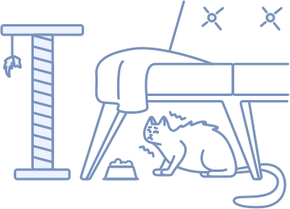

Найди своего друга, он тебя ждёт!
Спасаем жизни, находим семьи!
Спасаем жизни, находим семьи!
«Тёплый Дом» - это приют для животных, где каждый питомец находит уют, заботу и надежду на счастливую жизнь. Мы верим, что каждое животное заслуживает любви и достойной жизни. Мы открыты для всех — от пушистых котиков до верных собак, от игривых щенков до мудрых котов.
В нашем приюте питомцы получают любовь и заботу наших волонтёров, чистые и комфортные вольеры, где они могут свободно двигаться и играть, сбалансированное питание, разработанное ветеринаром, и регулярные осмотры и вакцинацию.
Вместе мы сможем подарить каждому животному тёплый дом и настоящую любовь!

Валентина Емельянова
+7 985 741 32 65
Подопечные: Дружок, Лариса
Виктория Некрасова
+7 974 741 38 65
Подопечные: Вилли, Глициния
Юлия Антипина
+7 932 774 44 65
Подопечные: Луна, Эрсетта
Анастасия Новикова
+7 922 785 22 65
Подопечные: Сунни, Кай
Если вы нашли бездомное животное или не справляетесь со своим, наши двери всегда открыты! Заполните заявку и мы вам поможем. Мы приютим вашего питомца, приведем его в порядок и найдем ему любящего хозяина!
